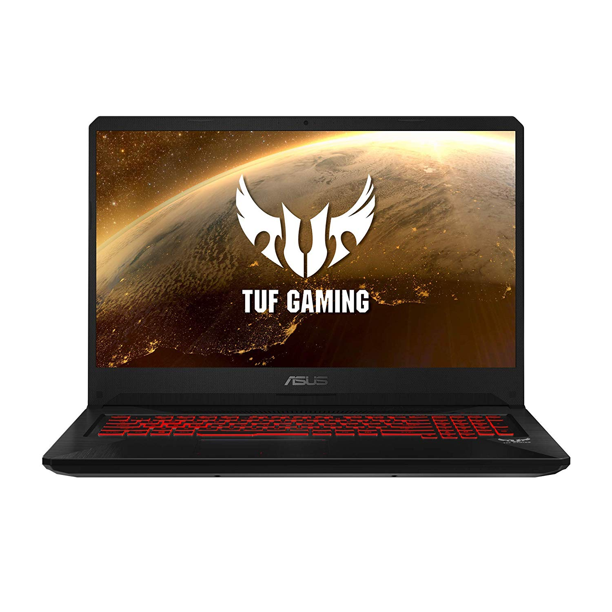
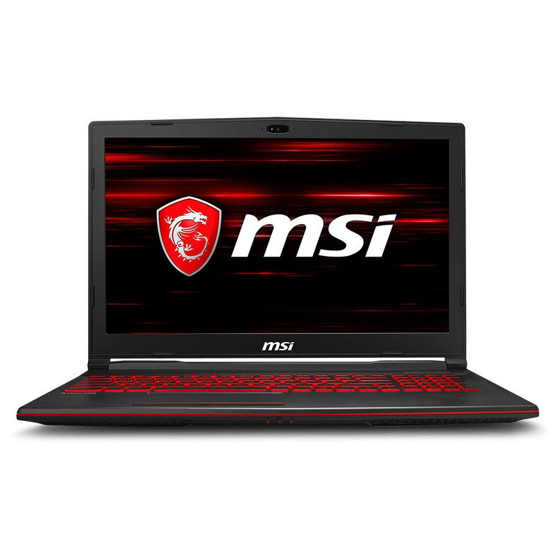

wa
RESULTADOS TEST PERFIL DE USUARIO
OPCIONES
Caracteristicas
Especificaciones
Opiniones
Durabilidad superior al estándar. Diseñado partiendo de la filosofía The Ultimate Force (TUF), el FX705 está fabricado de acuerdo a MIL-STD-810G, un estándar militar que certifica la fiabilidad del FX705 ante los rigores que ha de soportar un equipo de estas características. Construcción sólida. El FX705 está disponible en dos estilos que destilan robustez y rendimiento. La cubierta Gris Plomo de aluminio (o de plástico negro) presenta el distintivo diseño en forma de X, terminado con una textura cepillada o arenada a juego. El diseño hexagonal de la parte inferior del portátil aumenta su rigidez estructural y acentúa sus líneas agresivas. Teclado hyperstrike. El FX705 lleva un teclado optimizado para jugar dotado de efectos de iluminación RGB* que puedes personalizar desde la interfaz TUF Aura Core como prefieras. La tecnología exclusiva HyperStrike te permite ejecutar tus decisiones con una mayor precisión y comodidad. Presenta un diseño de inspiración sobremesa, un grupo WASD claramente diferenciado, teclas de dirección aisladas y teclas de función separadas. Además, la tecnología Overstroke registra las pulsaciones más rápido para que goces de un control más preciso y cómodo. Tecnología overstroke. Equipadas con tecnología Overstroke, las teclas proporcionan un recorrido de 1,8 mm, están calibradas con una resistencia de 62 gramos de fuerza (gf), lo que se traduce en un control de los juegos más rápido e intuitivo.
Procesador Intel® Core™ i7-8750H (6 Núcleos, 9M Cache, 2.2 GHz hasta 4.1 GHz) Memoria RAM 16GB (16GB) DDR4 2666MHz, 2 slots, ampliable hasta 32GB Almacenamiento 256GB SSD M.2 PCIE NVME + 1TB 5400rpm SATA Unidad óptica No Display 17.3"(43,94cm) LED Retroiluminado / Borde Estrecho / 300nits / FHD (1920x1080/16:9) / Antirreflejos / NTSC:72% / SRGB:100% / Adobe:75.36% / IPS Controlador gráfico NVIDIA® GeForce® GTX1050Ti 4GB GDDR5 VRAM Conectividad 10/100/1000 Mbps 802.11ac (Dual band) Bluetooth® 5.0 Cámara de portátil HD (720p) Micrófono Sí Batería 64WHrs, 4 Celdas, Polímeros Conexiones 1 x USB 2.0 2 x USB 3.1 (GEN1) 1 x Salida Auriculares/Entrada Micrófono 3.5mm (combo) 1 x Conector RJ45 LAN 1 x HDMI 1 x Orificio Bloqueo Kensington 1 x Entrada de Corriente Sistema operativo Sin Sistema Operativo Dimensiones 399 x 279 x 27,6 mm Peso 2,7 Kg (con batería de 4 celdas) Color Negro
Usuario : JuanAmbrosio Nota: 8/10 Comentario: El portátil lo recomiendo , ya que por ese precio te da una respuesta , en cuanto a juegos bastante potente. Usuario: Anónimo Nota 8.5/10 Comentario: Va todo perfecto , excepo la batería , que se gasta más rápido.
Añadir al carrito

wa
OPCIONES
Caracteristicas
Especificaciones
Opiniones
Últimos procesadores de octava generación de Intel® Core™ i7. ¡Da un gran salto en el rendimiento con los primeros procesadores de portátiles Hexa Core! Experimenta el juego mejorado y una renderización más rápida hasta en un 40% con los núcleos adicionales. ¡Cuantos más, mejor! Hasta GeForce® GTX 1050 4GB GDDR5 con rendimiento de un PC de sobremesa. Con el innovador Cooler Boost 5 y las características gaming únicas de MSI creadas por y para gamers, lo último en GeForce de NVIDIA, la GTX 1050, se lanza al terreno de los portátiles para un máximo rendimiento. Exclusiva tecnología Cooler Boost 5. El calor es el elemento más original en la tierra. Es pura física que más energía generará más calor. El enfriamiento es, por lo tanto, una tarea difícil de abordar. La tecnología Cooler Boost 5 exclusiva de MSI crea módulos térmicos duales internamente mediante la asignación de tuberías de calor dedicadas para GPU y CPU. Con un clic en el botón de refuerzo del ventilador, un total de 6 tubos de calor y ventiladores duales expulsan el sistema de forma activa y efectiva, haciendo que el diseño de refrigeración sea el más alto de su tipo. Teclado gaming de Steelseries. Cada detalle está especialmente calculado y diseñado para jugadores profesionales, y ahora es tuyo. Este teclado tiene retroiluminación, diseño ergonómico con desplazamiento de la llave de 1,9 mm para una mejor respuesta táctil y táctil, zona WASD óptima y soporte anti-fantasmas para hasta 45 teclas. La solución de blindaje de nivel mecánico hace que el teclado para juegos sea el más sólido de todos los tiempos. 5X Giant Speakers mejorados para un mayor realismo e inmersión. Los jugadores pueden sentir el rugido de todos los motores con los Giant Speakers actualizados. Diseño exclusivo de módulos de audio y cámara de sonido independiente para una sensación auditiva de primera. Nuevo Dragon Center con exclusivo modo gaming
Usuario : A. Rodriguez Nota: 8.7/10 Comentario: La pantalla se ve muy bien , me gusta la retroiluminación del teclado. También va muy rápido.
Añadir al carrito
Procesador Coffeelake i7-8750H+HM370 (6 núcleos, 2,2 GHz - 4,1 GHz, 9 MB) Memoria 8GB DDR4 (2 slots, máximo de 32GB) Almacenamiento 512 GB SSD Display 15.6" FHD (1920*1080), wideview 94%NTSC color Anti-glare Controlador gráfico GeForce® GTX 1050 Ti, 4GB GDDR5 Conectividad Gb LAN 802.11 ac Wi-Fi + Bluetooth v5 Cámara de portátil HD type (30fps@720p) Micrófono Sí Batería 6 celdas de Ion de litio 41 Whr Conexiones 1 x salida de auriculares 1 x entrada de micrófono 1x Type-C USB3.1 Gen1 3 x Type-A USB3.1 Gen1 1 x HDMI 1 x Mini-DisplayPort 1 x RJ45 Lector de Tarjetas 1x SD (XC/HC) Sistema operativo FreeDos Dimensiones 383 x 260 x 29 mm Peso 2.2 Kg Color Negro